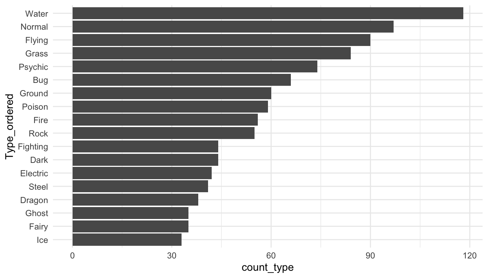

library(tidyverse)
library(here)
pokemon_df <- read_csv(here("data/pokemon_allgen.csv")) |>
mutate(Generation_cat = factor(Generation))9 Factors with forcats
Goals:
- Use the
forcatspackage to change the levels of factors, or to re-order levels of factors in a way that makes tables and graphs easier to read.
9.1 Change Factor Levels
The Data: The pokemon_allgen.csv data set contains observations on Pokemon from the first 6 Generations (the first 6 games). There are 20 variable in this data set, but, of particular interest for this chapter are
Type 1, the first Type characteristic of the Pokemon (a factor with 13 levels)Type 2, the second Type characteristic of the Pokemon (a factor with 13 levels,NAif the Pokemon only has one type)Generation, the generation the Pokemon first appeared in (a factor with 6 levels)
Read in the data set with read_csv(). Then, use a mutate() statement to make a Generation_cat variable that is a factor.
One easy way to get a quick summary of a factor variable is to use group_by() and n() within a summarise() statement:
pokemon_df |> group_by(`Type 1`) |>
summarise(counttype = n())# A tibble: 18 × 2
`Type 1` counttype
<chr> <int>
1 Bug 75
2 Dark 31
3 Dragon 41
4 Electric 90
5 Fairy 18
6 Fighting 27
7 Fire 56
8 Flying 6
9 Ghost 58
10 Grass 73
11 Ground 42
12 Ice 24
13 Normal 108
14 Poison 30
15 Psychic 73
16 Rock 47
17 Steel 29
18 Water 1199.1.1 fct_recode() to Rename Levels
Now, let’s make a bar plot that examines how many Legendary Pokemon first appear in each generation, using dplyr commands that we’ve used and a simple geom_col():
pokemon_legend <- pokemon_df |> filter(Legendary == TRUE) |>
group_by(Generation_cat) |>
summarise(nlegend = n())
ggplot(data = pokemon_legend, aes(x = Generation_cat, y = nlegend)) +
geom_col()
We’ve discussed how to change many aspects of ggplot2 graphs, but we haven’t discussed how to rename the labels of levels of a categorical variable, whether those appear in the x-axis or in a separate legend. The easiest way to do this is to rename the levels in the factor itself using fct_recode(). Suppose, for example, that we want to relabel the Generation number with the actual region corresponding to each game (Kanto, Johto, Hoenn, Sinnoh, Unova, and Kalos). The function fct_recode() takes the name of a factor already present in the data set as its first argument and then a series of renaming schemes (new_name = “old_name”) as its remaining arguments.
pokemon_legend <- pokemon_legend |>
mutate(Generation_cat2 = fct_recode(Generation_cat, Kanto = "1",
Johto = "2", Hoenn = "3",
Sinnoh = "4", Unova = "5",
Kalos = "6")) |>
select(Generation_cat2, everything())
head(pokemon_legend)# A tibble: 6 × 3
Generation_cat2 Generation_cat nlegend
<fct> <fct> <int>
1 Kanto 1 6
2 Johto 2 5
3 Hoenn 3 34
4 Sinnoh 4 17
5 Unova 5 27
6 Kalos 6 13ggplot(data = pokemon_legend,
aes(x = Generation_cat2, y = nlegend)) +
geom_col()
9.1.2 Collapsing Many Levels Into Fewer Levels with fct_collapse()
Sometimes, you might want to collapse the levels of two or more factors into a single level. With the Pokemon data set, there isn’t an example where this really makes sense, but, in the exercises, you’ll see a good use for this function with the social survey data set. For practice, we can collapse the Ice and Dark type Pokemon into a new level called Coolest and we can collapse the Poison, Fighting, and Fire type Pokemon into a new level called Least_Cool.
pokemon_long <- pokemon_df |> pivot_longer(c(`Type 1`, `Type 2`),
names_to = "Number",
values_to = "Type")
pokemon_long |>
mutate(new_type = fct_collapse(Type, Coolest = c("Ice", "Dark"),
Least_Cool = c("Fire", "Fighting", "Poison"))) |>
select(new_type, Type, everything())# A tibble: 1,894 × 22
new_type Type `#` Name Total HP Attack Defense Sp. A…¹ Sp. D…² Speed
<fct> <chr> <dbl> <chr> <dbl> <dbl> <dbl> <dbl> <dbl> <dbl> <dbl>
1 Grass Grass 1 Bulb… 318 45 49 49 65 65 45
2 Least_Cool Pois… 1 Bulb… 318 45 49 49 65 65 45
3 Grass Grass 2 Ivys… 405 60 62 63 80 80 60
4 Least_Cool Pois… 2 Ivys… 405 60 62 63 80 80 60
5 Grass Grass 3 Venu… 525 80 82 83 100 100 80
6 Least_Cool Pois… 3 Venu… 525 80 82 83 100 100 80
7 Grass Grass 3 Venu… 525 80 82 83 100 100 80
8 Least_Cool Pois… 3 Venu… 525 80 82 83 100 100 80
9 Least_Cool Fire 4 Char… 309 39 52 43 60 50 65
10 <NA> <NA> 4 Char… 309 39 52 43 60 50 65
# … with 1,884 more rows, 11 more variables: Generation <dbl>, Legendary <lgl>,
# id <chr>, identifier <chr>, height <dbl>, weight <dbl>,
# base_experience <dbl>, order <dbl>, is_default <dbl>, Generation_cat <fct>,
# Number <chr>, and abbreviated variable names ¹`Sp. Atk`, ²`Sp. Def`What happens to the levels that aren’t being re-specified?
9.1.3 Exercises
Exercises marked with an * indicate that the exercise has a solution at the end of the chapter at @ref(solutions-7).
What
dplyrfunction(s) could you also use to create the new levels that were created withfct_collapse()? Why might it be a little easier to usefct_collapse()?* We did not properly explore the data set before making the graphs above, and, in fact, there is some double counting of Pokemon in this data set (this is another example where being familiar with the data set you’re working with is advantageous: people familiar with Pokemon know that there are fewer than 947 Pokemon in Generations 1 through 6).
Figure out why some Pokemon are double counted. Then, create a new data set that only keeps one observation per Pokemon #.
- Create the bar plot with your non-duplicated data set. Are your results significantly changed?
9.2 Reorder Factor Levels
9.2.1 Change the Order of Levels by a Quantitative Variable with fct_reorder()
You might also be interested in re-ordering the x or y-axis of a particular graph so that the order of the factors correspond to, for example, the median of a quantitative variable for each level. The reason you would want to do this is easiest to see with an example. For example, suppose you want to look at the most common Pokemon types across the first 6 generations. We use the non-duplicated data set from the previous section’s exercises, we pivot the data so that type is in one column, and we remove observations with missing Type, which correspond to the second Type of Pokemon that only have a single Type:
pokemon_nodup <- pokemon_df |> group_by(`#`) |> slice(1) |>
ungroup()
pokemon_long <- pokemon_nodup |>
pivot_longer(c(`Type 1`, `Type 2`),
names_to = "Number",
values_to = "Type")
pokemon_sum <- pokemon_long |>
group_by(Type) |>
summarise(count_type = n()) |>
filter(!is.na(Type))
ggplot(data = pokemon_sum, aes(x = Type,
y = count_type)) +
geom_col() +
coord_flip() ## flips the x and y axes
How does R order the levels of the Type factor, by default? How might you like them to be ordered to make the graph more readable?
The following code creates a new factor variable called Type_ordered that orders type by the count_type variable. fct_reorder() takes a factor as its first argument and a numeric variable to re-order that factor by as its second argument. The bar plot is then reconstructed with this new variable.
pokemon_sum <- pokemon_sum |>
mutate(Type_ordered = fct_reorder(.f = Type, .x = count_type))
ggplot(data = pokemon_sum, aes(x = Type_ordered,
y = count_type)) +
geom_col() +
coord_flip()
9.2.2 Lollipop Plots
Lollipop plots are a popular alternative to bar plots because they often look cleaner with less ink. To make a lollipop plot in R, we specify two different geoms: geom_segment() to form the stick of the lollipop and geom_point() to form the pop part of the lollipop. geom_segment() requires 4 aesthetics: x, xend, y, and yend.
ggplot(data = pokemon_sum, aes(x = Type_ordered,
y = count_type)) +
geom_segment(aes(x = Type_ordered, xend = Type_ordered,
y = 0, yend = count_type)) +
geom_point() +
coord_flip()
fct_reorder() also works with boxplots or simple point plots that show, for example, the median response for each level of a factor. The following set of plots investigate how the Defense stat changes for different Pokemon types
pokemon_long <- pokemon_long |>
filter(!is.na(Type)) |>
mutate(Type_Deford = fct_reorder(.f = Type, .x = Defense,
.fun = median))
ggplot(data = pokemon_long, aes(x = Type_Deford,
y = Defense)) +
geom_boxplot() +
coord_flip()
The following code makes a point plot that shows the median defense for each type instead of boxplots.
pokemon_med <- pokemon_long |> group_by(Type_Deford) |>
summarise(med_def = median(Defense)) |>
mutate(Type_Deford = fct_reorder(.f = Type_Deford, .x = med_def,
.fun = median))
ggplot(data = pokemon_med, aes(x = med_def, y = Type_Deford)) +
geom_point()
Finally, we can make a lollipop plot of median defense.
ggplot(data = pokemon_med, aes(x = Type_Deford, y = med_def)) +
geom_segment(aes(xend = Type_Deford, y = 0, yend = med_def)) +
geom_point() +
coord_flip()
Do you have a preference between the boxplot graph, the point plot, and the lollipop plot?
New Data. The gun_violence_us.csv data set was obtained from https://www.openintro.org/book/statdata/index.php?data=gun_violence_us and contains the following variables on gun violence in 2014:
state, the name of the U.S. statemortality_rate, number of deaths from gun violence per 100,000 peopleownership_rate, the proportion of adults who own a gunregion, region of the U.S. (South,West,NE, andMW)
mortality_df <- read_csv(here("data/gun_violence_us.csv")) |>
mutate(region = factor(region))9.2.3 Re-Leveling By Two Quantitative Variables with fct_reorder2()
Suppose that we want to investigate the relationship between mortality_rate and ownership_rate using this data set. Run the following code to create a scatterplot of mortality_rate vs. ownership_rate with fitted linear regression lines for each region of the United States:
ggplot(data = mortality_df,
aes(x = ownership_rate, y = mortality_rate, colour = region)) +
geom_point() +
geom_smooth(method = "lm")
Notice the order of the levels in the legend. Most people would prefer the order to actually match up with where the lines in the plot end, not for the order to be alphabetical. To achieve this, we can use fct_reorder2() to change the order of the factor levels:
mortality_df <- mortality_df |>
mutate(region_2 = fct_reorder2(region,
.x = ownership_rate,
.y = mortality_rate))
ggplot(data = mortality_df,
aes(x = ownership_rate, y = mortality_rate, colour = region_2)) +
geom_point() +
geom_smooth(method = "lm")
Did it change the order of the levels how you would expect? fct_reorder2() actually looks at points, not lines, when determining the ordering. If you want the levels to match up exactly, then we’ll have to reorder the levels manually with fct_relevel():
9.2.4 Reordering Levels Manually with fct_relevel()
Factors are ordered alphabetically by default. If we want precise control over the order of the levels of a factor, we can use fct_relevel(), which takes a factor and a vector of the new levels as inputs:
mortality_df <- mortality_df |>
mutate(region_3 = fct_relevel(region, c("South", "West", "MW", "NE")))
ggplot(data = mortality_df,
aes(x = ownership_rate, y = mortality_rate, colour = region_3)) +
geom_point() +
geom_smooth(method = "lm")
Reordering the levels of a factor manually might also be useful in fitting linear models. Recall that, by default, R makes the reference group in a linear model the first level alphabetically. If you’d like a different reference group, you can reorder the levels of the factor:
mod <- lm(mortality_rate ~ ownership_rate + region, data = mortality_df)
mod2 <- lm(mortality_rate ~ ownership_rate + region_2, data = mortality_df)
mod3 <- lm(mortality_rate ~ ownership_rate + region_3, data = mortality_df)
summary(mod)
summary(mod2)
summary(mod3)9.2.5 Exercises
- Make the side-by-side boxplots again with the pokemon data but do not use
ungroup()by running the following code.
pokemon_nodup <- pokemon_df |> group_by(`#`) |> slice(1) ## |>
## ungroup()
pokemon_long <- pokemon_nodup |>
pivot_longer(c(`Type 1`, `Type 2`),
names_to = "Number",
values_to = "Type")
pokemon_long <- pokemon_long |>
filter(!is.na(Type)) |>
mutate(Type_Deford = fct_reorder(.f = Type, .x = Defense,
.fun = median))
ggplot(data = pokemon_long, aes(x = Type_Deford,
y = Defense)) +
geom_boxplot() +
coord_flip()
Why aren’t the types ordered by median defense anymore?
- The
.funargument infct_reorder()controls how theTypefactor is ordered. Change this to specify ordering by themean,max, andmin. What ordering makes the most sense? Why?
9.3 Chapter Exercises
Exercises marked with an * indicate that the exercise has a solution at the end of the chapter at @ref(solutions-7).
For these chapter exercises, we will use a data set on National Football League standings from 2000 to 2020. Read in the data set with:
library(tidyverse)
library(here)
standings_df <- read_csv(here("data/standings.csv"))Rows: 638 Columns: 15
── Column specification ────────────────────────────────────────────────────────
Delimiter: ","
chr (4): team, team_name, playoffs, sb_winner
dbl (11): year, wins, loss, points_for, points_against, points_differential,...
ℹ Use `spec()` to retrieve the full column specification for this data.
ℹ Specify the column types or set `show_col_types = FALSE` to quiet this message.standings_df# A tibble: 638 × 15
team team_…¹ year wins loss point…² point…³ point…⁴ margi…⁵ stren…⁶
<chr> <chr> <dbl> <dbl> <dbl> <dbl> <dbl> <dbl> <dbl> <dbl>
1 Miami Dolphi… 2000 11 5 323 226 97 6.1 1
2 Indianapol… Colts 2000 10 6 429 326 103 6.4 1.5
3 New York Jets 2000 9 7 321 321 0 0 3.5
4 Buffalo Bills 2000 8 8 315 350 -35 -2.2 2.2
5 New England Patrio… 2000 5 11 276 338 -62 -3.9 1.4
6 Tennessee Titans 2000 13 3 346 191 155 9.7 -1.3
7 Baltimore Ravens 2000 12 4 333 165 168 10.5 -2.5
8 Pittsburgh Steele… 2000 9 7 321 255 66 4.1 -0.2
9 Jacksonvil… Jaguars 2000 7 9 367 327 40 2.5 -1.4
10 Cincinnati Bengals 2000 4 12 185 359 -174 -10.9 0.4
# … with 628 more rows, 5 more variables: simple_rating <dbl>,
# offensive_ranking <dbl>, defensive_ranking <dbl>, playoffs <chr>,
# sb_winner <chr>, and abbreviated variable names ¹team_name, ²points_for,
# ³points_against, ⁴points_differential, ⁵margin_of_victory,
# ⁶strength_of_scheduleThe important variables that we will use include:
team, the city where the team is based inteam_name, the name of the teamplayoffs, whether or not the team made the playoffs that yearsb_winner, whether or not the team won the superbowl that year
Use the
table()function withtable(name_of_data_frame$name_of_variable)to make a table ofteam_name. This is useful to use for categorical variables to give a quick summary of what the levels are and how many times each level appears in the data set.Until a couple of years ago, the Washington Commanders team used to be known as the Washington Redskins. Because of the obvious racism the name conveys, in 2022, the name was changed from Redskins to Commanders. Use a
forcatsfunction to rename theRedskinsteam_nametoCommanders. Note that, usually, we have been renaming the new variable after we use aforcatsfunction, but, oftentimes, it makes sense to just overwrite the old variable by using the same name in ourmutate()statement.Use a function from
tidyrto combineteamandteam_nameinto a single variable calledfranchise. You may want to specifysep = " "for consistency with the city names.There are a couple of franchises in the national football league that moved cities in the late 2010s. In particular, the San Diego Chargers became the Los Angeles Chargers and the St. Louis Rams became the Los Angeles Rams (this is another instance where being familiar with context is helpful here: it may have taken you much longer to figure this out, had you not known much about the NFL). Use a
forcatsfunction to put theSan Diego ChargersandLos Angeles Chargersinto a single level,San Diego LA Chargers, and to put theSt. Louis RamsandLos Angeles Ramsinto a single level,St. Louis LA Rams.Using the updated data set, create a lollipop plot of the ten
franchises who have made the playoffs most often. You will need to do some work withdplyrbefore making the plot.
- Customize your lollipop plot by changing the way the points look at the end and / or the way the “stems” of the lollipops look. You may use https://r-graph-gallery.com/301-custom-lollipop-chart.html for inspiration.
The following are the old chapter exercises for forcats: I’ve left them in here in case you want some extra practice! We will use the general social survey data set, which is in the forcats library in R. You should some of this Wikipedia page to better understand where this data comes from Wikipedia.
Most variables are self-explanatory, but a couple that aren’t are:
partyid, political leaning anddenom, religious denomination (if unfamiliar with this, you can think of it as a “more specific” subset of a particular religion).
Note that some of these exercises are from the R for Data Science textbook.
Load in the data set with
library(tidyverse)
gss_cat- * Using a
forcatsfunction, change the name of the levelNot str republicanto beWeak republicanand change the name of the levelNot str democratto beWeak democrat. These names more closely match the levelsStrong republicanandStrong democrat. Then, create a table of counts that shows the number of respondents in each political partypartyid.
Note: Levels that aren’t specified in your forcats function do not change.
Note 2: In naming something Weak republican, you’ll need to use backticks since there is a space in the level name.
* Use a
forcatsfunction so thatpartyidjust has 4 categories: Other (corresponding to No answer, Don’t know, Other party), Ind (corresponding to Ind,near rep, Independent, Ind, near dem), Rep (corresponding to Strong republican and Not str republican), and Dem (corresponding to Not str democrat and Strong democrat).* Run the code to create the following plot that shows the average number of hours of television people watch from various religions.
relig_summary <- gss_cat |>
group_by(relig) |>
summarise(
age = mean(age, na.rm = TRUE),
tvhours = mean(tvhours, na.rm = TRUE),
n = n()
)
ggplot(data = relig_summary, aes(tvhours, relig)) +
geom_point()Then, use a forcats function create a new variable in the data set that reorders the religion factor levels and make a lollipop plot so that the religion watches the most television, on average, is on the top, and the religion that watches the least television, on average, is on the bottom.
- * Run the code to make the following line plot that shows age on the x-axis, the proportion on the y-axis, and is coloured by various marital statuses (married, divorced, widowed, etc.):
by_age <- gss_cat |>
filter(!is.na(age)) |>
count(age, marital) |>
group_by(age) |>
mutate(prop = n / sum(n))
ggplot(by_age, aes(age, prop,
colour = marital)) +
geom_line(na.rm = TRUE) +
labs(colour = "marital")Then, use a forcats function to make the plot so that the legend labels line up better with the different coloured marital status lines (e.g. so that the label for widowed is the first that appears in the legend, the label for married is second, etc.).
- We haven’t talked much about creating two-way tables (or contingency tables). These are generally quite difficult to make with the
tidyversefunctions, but you can use the baseRtable()andprop.table()functions to make these.
Using data only from the year 2014, run the following code to make 4 two-way tables with the party_small variable that was constructed earlier and race:
gss_cat <- gss_cat |> mutate(party_small = fct_collapse(partyid,
Other = c("No answer", "Don't know", "Other party"),
Ind = c("Ind,near rep", "Independent", "Ind,near dem"),
Rep = c("Strong republican", "Not str republican"),
Dem = c("Not str democrat", "Strong democrat")))
gss_recent <- gss_cat |> filter(year == 2014)
tab1 <- table(gss_recent$party_small, gss_recent$race)
tab1
Other Black White Not applicable
Other 8 12 68 0
Rep 22 17 498 0
Ind 152 108 828 0
Dem 80 249 496 0prop.table(tab1)
Other Black White Not applicable
Other 0.003152088 0.004728132 0.026792750 0.000000000
Rep 0.008668243 0.006698188 0.196217494 0.000000000
Ind 0.059889677 0.042553191 0.326241135 0.000000000
Dem 0.031520883 0.098108747 0.195429472 0.000000000prop.table(tab1, margin = 1)
Other Black White Not applicable
Other 0.09090909 0.13636364 0.77272727 0.00000000
Rep 0.04096834 0.03165736 0.92737430 0.00000000
Ind 0.13970588 0.09926471 0.76102941 0.00000000
Dem 0.09696970 0.30181818 0.60121212 0.00000000prop.table(tab1, margin = 2)
Other Black White Not applicable
Other 0.03053435 0.03108808 0.03597884
Rep 0.08396947 0.04404145 0.26349206
Ind 0.58015267 0.27979275 0.43809524
Dem 0.30534351 0.64507772 0.26243386 Use the help on ?prop.table to figure out how each of these three tables are constructed.
Which table do you think is most informative? What conclusions does it help you to draw?
9.4 Exercise Solutions
9.4.1 Change Factor Levels S
- * We did not properly explore the data set before making the graphs above, and, in fact, there is some double counting of Pokemon in this data set (this is another example where being familiar with the data set you’re working with is advantageous: people familiar with Pokemon know that there are fewer than 947 Pokemon in Generations 1 through 6).
Figure out why some Pokemon are double counted. Then, create a new data set that only keeps one observation per Pokemon #.
pokemon_nodup <- pokemon_df |> group_by(`#`) |> slice(1) |>
ungroup()9.4.2 Reorder Factor Levels S
9.4.3 Chapter Exercises S
- * Using a
forcatsfunction, change the name of the levelNot str republicanto beWeak republicanand change the name of the levelNot str democratto beWeak democrat. These names more closely match the levelsStrong republicanandStrong democrat. Then, create a table of counts that shows the number of respondents in each political partypartyid.
Note: Levels that aren’t specified in your forcats function do not change.
Note 2: In naming something Weak republican, you’ll need to use backticks since there is a space in the level name.
gss_cat |>
mutate(partyid_new = fct_recode(partyid,
`Weak republican` = "Not str republican",
`Weak democrat` = "Not str democrat")) |> group_by(partyid_new) |>
summarise(ncount = n())- * Use a
forcatsfunction so thatpartyidjust has 4 categories: Other (corresponding to No answer, Don’t know, Other party), Ind (corresponding to Ind,near rep, Independent, Ind, near dem), Rep (corresponding to Strong republican and Not str republican), and Dem (corresponding to Not str democrat and Strong democrat).
gss_cat <- gss_cat |> mutate(party_small = fct_collapse(partyid,
Other = c("No answer", "Don't know", "Other party"),
Ind = c("Ind,near rep", "Independent", "Ind,near dem"),
Rep = c("Strong republican", "Not str republican"),
Dem = c("Not str democrat", "Strong democrat")))- * Run the code to create the following plot that shows the average number of hours of television people watch from various religions.
relig_summary <- gss_cat |>
group_by(relig) |>
summarise(
age = mean(age, na.rm = TRUE),
tvhours = mean(tvhours, na.rm = TRUE),
n = n()
)
ggplot(data = relig_summary, aes(tvhours, relig)) +
geom_point()Then, use a forcats function create a new variable in the data set that reorders the religion factor levels and remake the barplot so that the religion watches the most television, on average, is on the top, and the religion that watches the least television, on average, is on the bottom.
relig_summary <- relig_summary |>
mutate(relig = fct_reorder(relig, tvhours))
ggplot(data = relig_summary, aes(x = relig, y = tvhours)) +
geom_segment(aes(x = relig, xend = relig, y = 0, yend = tvhours)) +
geom_point() +
coord_flip()
- * Run the code to make the following line plot that shows age on the x-axis, the proportion on the y-axis, and is coloured by various marital statuses (married, divorced, widowed, etc.):
by_age <- gss_cat |>
filter(!is.na(age)) |>
count(age, marital) |>
group_by(age) |>
mutate(prop = n / sum(n))
ggplot(by_age, aes(age, prop,
colour = marital)) +
geom_line(na.rm = TRUE) +
labs(colour = "marital")Then, use a forcats function to make the plot so that the legend labels line up better with the different coloured marital status lines (e.g. so that the label for widowed is the first that appears in the legend, the label for married is second, etc.).
by_age2 <- by_age |> ungroup() |>
mutate(marital2 = fct_reorder2(marital, .x = age, .y = prop))
ggplot(by_age2, aes(age, prop,
colour = marital2)) +
geom_line(na.rm = TRUE) +
labs(colour = "marital") +
scale_colour_viridis_d()9.5 Non-Exercise R Code
library(tidyverse)
library(here)
pokemon_df <- read_csv(here("data/pokemon_allgen.csv")) |>
mutate(Generation_cat = factor(Generation))
pokemon_df |> group_by(`Type 1`) |>
summarise(counttype = n())
pokemon_legend <- pokemon_df |> filter(Legendary == TRUE) |>
group_by(Generation_cat) |>
summarise(nlegend = n())
ggplot(data = pokemon_legend, aes(x = Generation_cat, y = nlegend)) +
geom_col()
pokemon_legend <- pokemon_legend |>
mutate(Generation_cat2 = fct_recode(Generation_cat, Kanto = "1",
Johto = "2", Hoenn = "3",
Sinnoh = "4", Unova = "5",
Kalos = "6")) |>
select(Generation_cat2, everything())
head(pokemon_legend)
ggplot(data = pokemon_legend,
aes(x = Generation_cat2, y = nlegend)) +
geom_col()
pokemon_long <- pokemon_df |> pivot_longer(c(`Type 1`, `Type 2`),
names_to = "Number",
values_to = "Type")
pokemon_long |>
mutate(new_type = fct_collapse(Type, Coolest = c("Ice", "Dark"),
Least_Cool = c("Fire", "Fighting", "Poison"))) |>
select(new_type, Type, everything())
pokemon_nodup <- pokemon_df |> group_by(`#`) |> slice(1) |>
ungroup()
pokemon_long <- pokemon_nodup |>
pivot_longer(c(`Type 1`, `Type 2`),
names_to = "Number",
values_to = "Type")
pokemon_sum <- pokemon_long |>
group_by(Type) |>
summarise(count_type = n()) |>
filter(!is.na(Type))
ggplot(data = pokemon_sum, aes(x = Type,
y = count_type)) +
geom_col() +
coord_flip() ## flips the x and y axes
pokemon_sum <- pokemon_sum |>
mutate(Type_ordered = fct_reorder(.f = Type, .x = count_type))
ggplot(data = pokemon_sum, aes(x = Type_ordered,
y = count_type)) +
geom_col() +
coord_flip()
ggplot(data = pokemon_sum, aes(x = Type_ordered,
y = count_type)) +
geom_segment(aes(x = Type_ordered, xend = Type_ordered,
y = 0, yend = count_type)) +
geom_point() +
coord_flip()
pokemon_long <- pokemon_long |>
filter(!is.na(Type)) |>
mutate(Type_Deford = fct_reorder(.f = Type, .x = Defense,
.fun = median))
ggplot(data = pokemon_long, aes(x = Type_Deford,
y = Defense)) +
geom_boxplot() +
coord_flip()
pokemon_med <- pokemon_long |> group_by(Type_Deford) |>
summarise(med_def = median(Defense)) |>
mutate(Type_Deford = fct_reorder(.f = Type_Deford, .x = med_def,
.fun = median))
ggplot(data = pokemon_med, aes(x = med_def, y = Type_Deford)) +
geom_point()
ggplot(data = pokemon_med, aes(x = Type_Deford, y = med_def)) +
geom_segment(aes(xend = Type_Deford, y = 0, yend = med_def)) +
geom_point() +
coord_flip()
mortality_df <- read_csv(here("data/gun_violence_us.csv")) |>
mutate(region = factor(region))
ggplot(data = mortality_df,
aes(x = ownership_rate, y = mortality_rate, colour = region)) +
geom_point() +
geom_smooth(method = "lm")
mortality_df <- mortality_df |>
mutate(region_2 = fct_reorder2(region,
.x = ownership_rate,
.y = mortality_rate))
ggplot(data = mortality_df,
aes(x = ownership_rate, y = mortality_rate, colour = region_2)) +
geom_point() +
geom_smooth(method = "lm")
mortality_df <- mortality_df |>
mutate(region_3 = fct_relevel(region, c("South", "West", "MW", "NE")))
ggplot(data = mortality_df,
aes(x = ownership_rate, y = mortality_rate, colour = region_3)) +
geom_point() +
geom_smooth(method = "lm")
mod <- lm(mortality_rate ~ ownership_rate + region, data = mortality_df)
mod2 <- lm(mortality_rate ~ ownership_rate + region_2, data = mortality_df)
mod3 <- lm(mortality_rate ~ ownership_rate + region_3, data = mortality_df)
summary(mod)
summary(mod2)
summary(mod3)